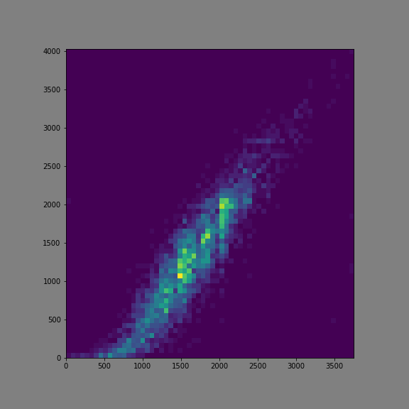

AtCoder to CodeForces converter:
or
CodeForces to AtCoder converter:
or
Here you can watch some rating correlation plots between CodeForces and AtCoder:
Rating correlation page

ivan-belkov2@ya.ru
- here you can send any questions, wishes or suggestions.